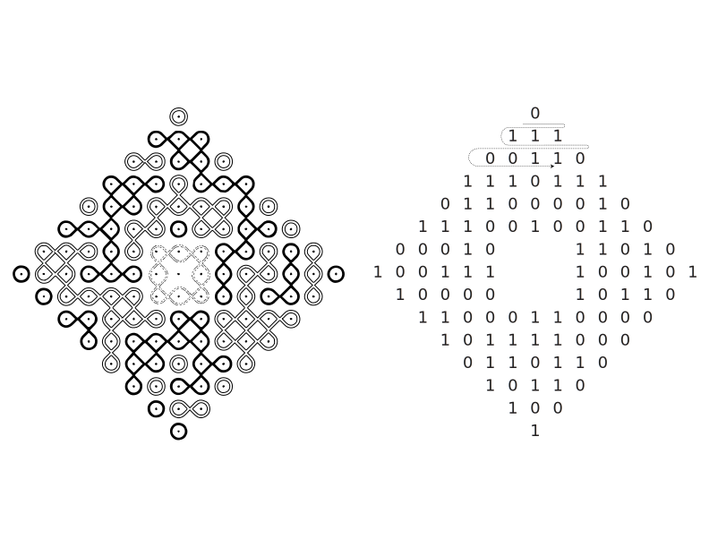
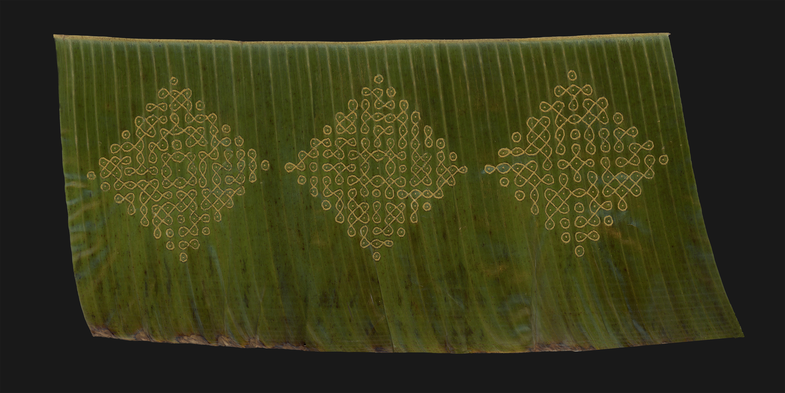
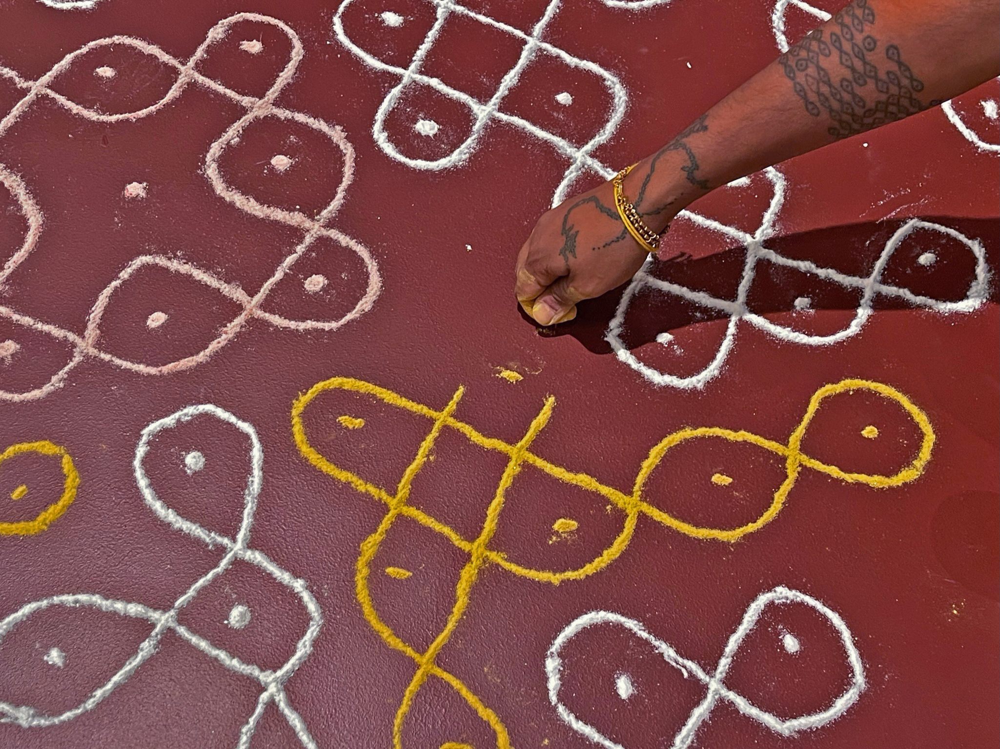
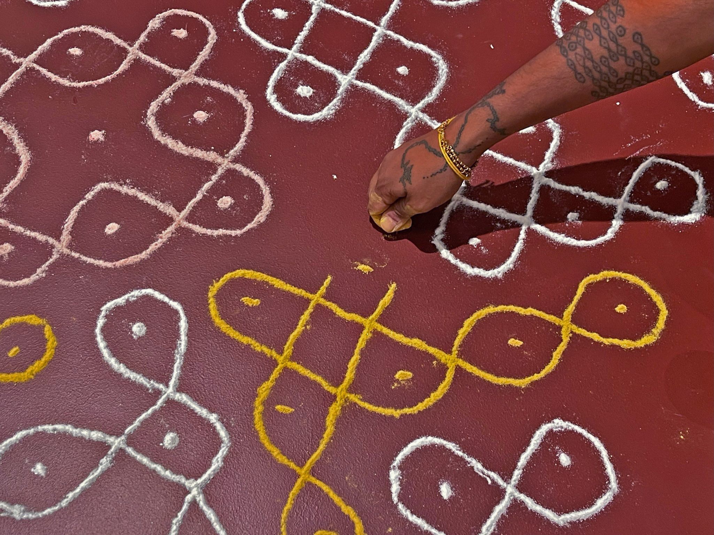

SWARAJYALAXMI
Kolam (in Tamil) or Muggu (Telugu) is a traditional art form from South India. Kolams are auspicious drawings on the floor (usually at the threshold of the home) using rice flour. Kolams are traditionally made by women and created before sunrise. They comprise mathematically complex patterns that feature continuous intertwined lines. The drawings are notably ephemeral. They are disturbed throughout the day by wind and footsteps or as insects consume the tiny grains of flour.
There are many variations of Kolam designs but there is one essential property: they must use continuous curves in which there are no holes and the beginning and end-point are the same. Many Kolams also feature a grid of dots that follows the Fibonacci sequence. Not all Kolams are symmetrical but many use principles of recursion and repetition. There has been much research by computer scientists, ethno-mathematicians, and anthropologists on translating Kolam designs into rulesets that can then be executed by computer programs.
In my project Swarajyalaxmi, I developed a computer program that allows me to generate Kolam designs that are embedded with the names of my family. I primarily focus on my paternal grandmother’s name, Swarajyalaxmi, and then her mother and grandmother: Kameswaramma and Rajyalaxmi. To encode their names into Kolam designs, I first translate each character into an eight-digit binary code (made from only 0s and 1s). I then map this code onto my starting grid of dots (moving left to right and top to bottom). I use the center of the grid as extra space to work with a grid that may contain more dots than characters. Using this grid as a basis, the algorithm then fills in the sections with looping components, but making sure to never connect dots associated with “0” to those associated with “1”.

This process of translation served a functional purpose and reflected the messiness of translation that I find present in thinking about names in my family. My grandmother’s name written in Telugu is స్వరాజ్యలక్ష్మి but transliterated into English it becomes Swarajyalaxmi. Transliteration is an approximation and not an exact science. Her name could have also become Swarajyalakshmi. I think all translation is embedded with choice and subjectivity. In my algorithmic process, I chose to use the transliterated name as opposed to the Telugu spelling. Translating Latin characters into binary vs Telugu characters becomes much simpler because there are only 26 letters in English whereas Telugu has 56 characters that combine to form single compound characters. Translating స్వరాజ్యలక్ష్మి into binary code creates 45 eight-digit codes while in comparison, translating Swarajyalxmi to binary code yields just 13 eight-digit codes. I believe our modern computer systems are biased towards English in many ways (for example how elements on websites flow from left to right) but binary code itself is not. For example, German polymath, Gottfried Leibniz is usually credited with inventing binary code in 1689 but had drawn inspiration from the Chinese I Ching Hexagram, and many other non-European cultures (such as the West African Ifá tradition) have been using binary systems long before the 17th century. I feel the history of Binary encoding complicates assumptions of computation’s origins in the “West”.
Working with the English transliteration of my grandmother's name for this project was simpler mathematically but also introduced a point of tension that is relevant on many levels. My grandmother and I had a language barrier between us. I don’t speak, read, or write Telugu fluently and my grandmother did not speak English fluently. Our communication with each other was often mediated by translation whether that be through help from a family member or attempts to piece together meaning through a combination of partial knowledge, gestures, context clues, and emotion. Additionally, the transliteration of her name to English is significant because my grandmother’s namesake is, in part, about obtaining freedom from the English (She was born in 1921 and India gained Independence in 1947). Swaraj means ‘self-rule’ in Sanskrit. The other meaning of her name is, like many Kolam designs, recursive. It is a name within a name. Rajyalaxmi was her own paternal grandmother’s name. And so her name has a double significance. It is both a tribute to her grandmother and a symbol of hope for freedom.
For the form of this work, I will draw my grandmother’s Kolam in rice flour on the ground. I have also etched three Kolams representing Swarajyalaxmi, Kameswaramma (
her mother), and Rajyalaxmi (her grandmother) into a Banana leaf. Banana leaves are part of a mourning ritual called Maasikam that my family has been practicing since the death of my Grandmother last year at age 101. Additionally, Banana leaves are used as plates in South India and so they also evoke an association with family and the warmth of communal meals. Next to the work, a recorded oral history interview with my grandmother speaking about her life and the significance of her name.
References:
- African binary code
- The Kolam Tradition | American Scientist
- Significance of Kolam in Tamil Culture | Sahapedia
- https://www.cmi.ac.in/gift/Kolam.htm
- https://criticalcode.recipes/contributions/kolam-in-code
Performance documentation.  Etching of three kolams into banana leaf.
 Installation view.

Installation view.
Installation view.

Installation view.
 Installation view.
Installation view.
← back to selected work